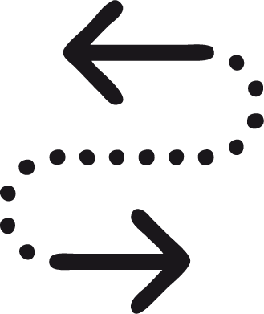

LOST+FOUND
LOST+ FOUND est un projet social collaboratif qui permet de retracer l’historique d’un objet perdu et trouvé.

ABOUT
En partant de mes recherches d’année sur l’objet perdu et l’objet trouvé,
qui ont pris la forme d’un mémoire, j’ai décidé de me concentrer sur les
échanges que permettait la perte d’objets. Le projet consiste à créer une
nouvelle dynamique d’échanges à partir de l’objet perdu et l’objet trouvé.
Il est question d’expérimenter la perte de manière positive. L’idée du
projet m’est survenue lorsque j’ai perdu mon portefeuille il y a un an. Cette
dépossession a bousculé mon quotidien et m’a amené à me poser des
questions sur la perte de nos objets intimes et les situations qui peuvent
en découler. Retrouvé un mois plus tard, je brûlais alors de curiosité à
l’idée de connaître le parcours qu’il avait réalisé et les personnes qu’il
avait pû rencontrer...
CONCEPT
Le propriétaire décide de participer au projet. Il choisi un objet personnel auquel il appose une étiquette ou un porte-clef contenant le numéro de référence de l’objet et le site internet du projet.
Un compte en ligne est créé pour chaque objet, celui-ci contenant des informations, des images, des messages.

Une personne découvre l’objet perdu. Elle peut alors accéder à la page de l’objet, lire les informations, ajouter du contenu et interagir avec l’ancien propriétaire.
Le propriétaire décide de participer au projet. Il choisi un objet personnel auquel il appose une étiquette ou un porte-clef contenant le numéro de référence de l’objet et le site internet du projet.
Un compte en ligne est créé pour chaque objet, celui-ci contenant des informations, des images, des messages.
Une personne découvre l’objet perdu. Elle peut alors accéder à la page de l’objet, lire les informations, ajouter du contenu et interagir avec l’ancien propriétaire.